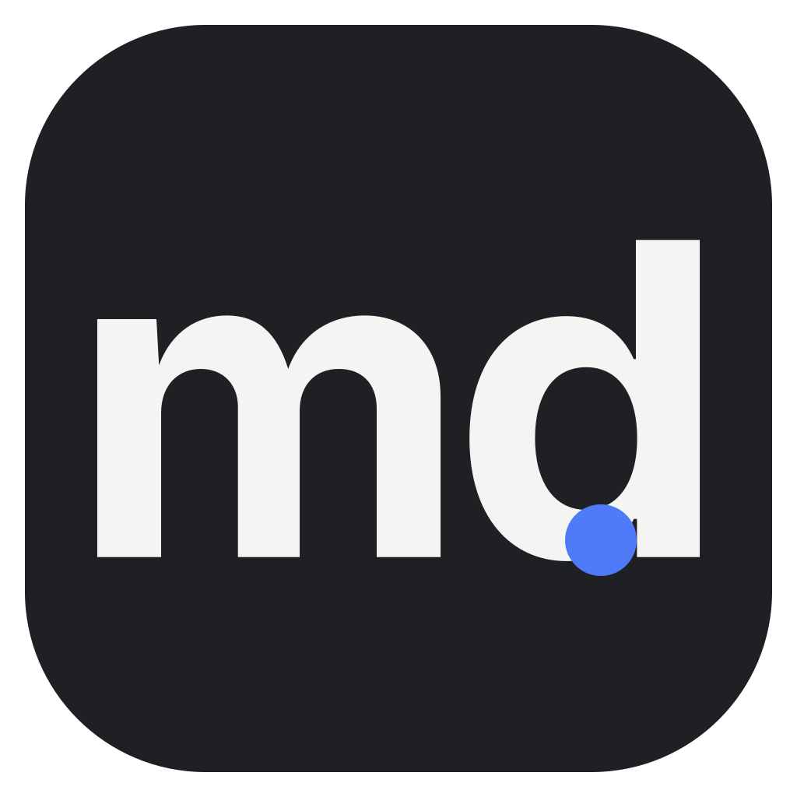
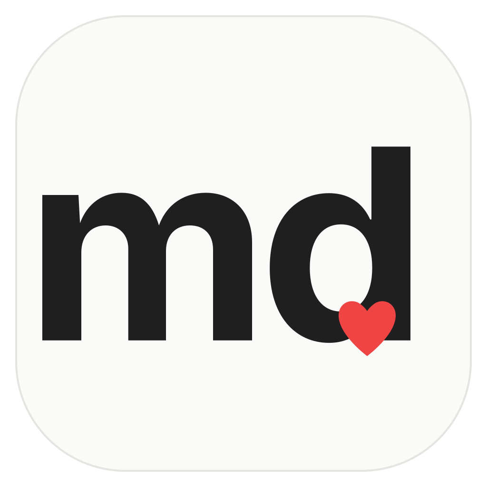
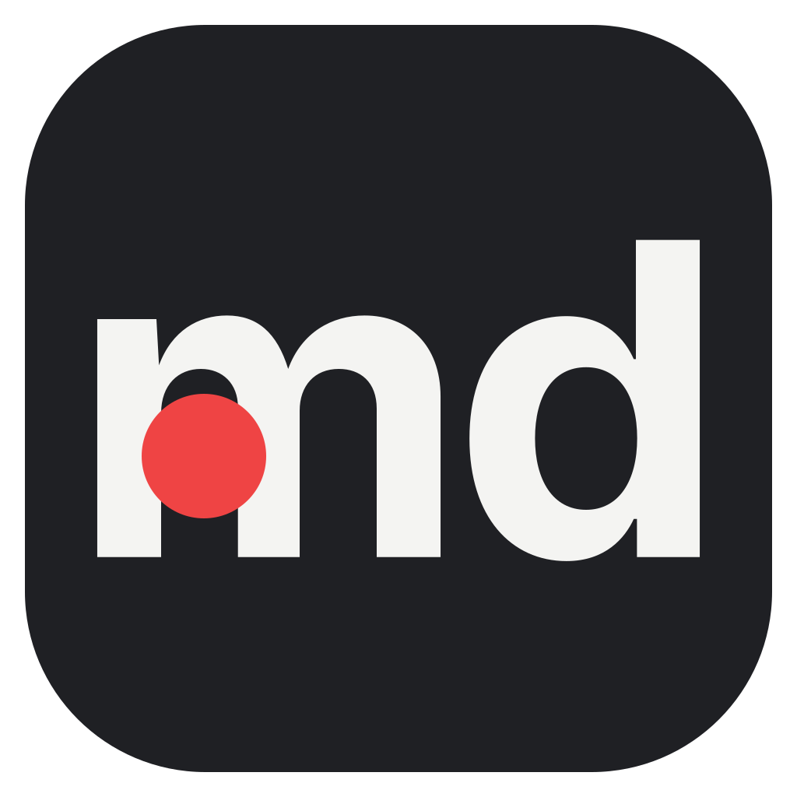
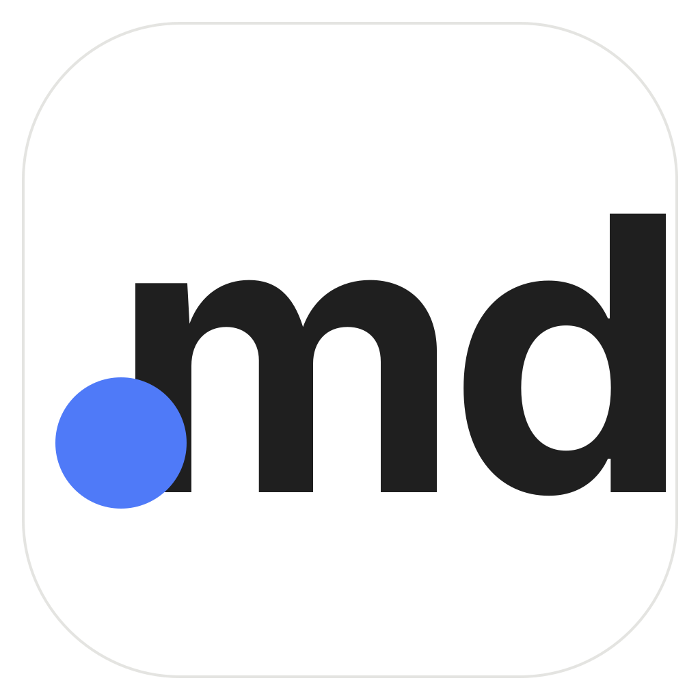
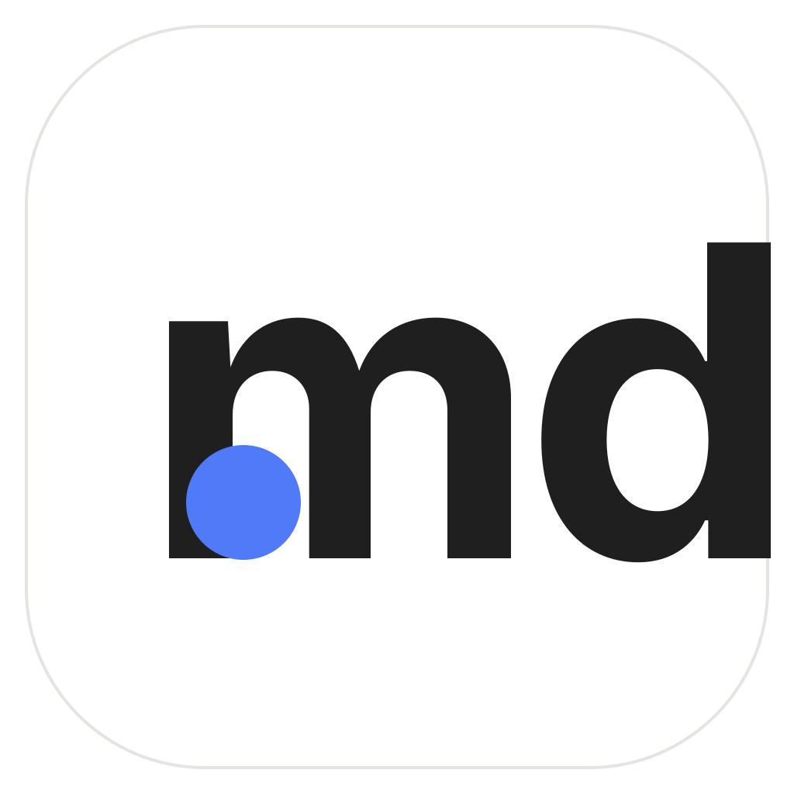

각 시안을 라이트/다크 배경 + 64·32·20px 축소로 함께 표시 (Dock·작업표시줄 가독성 확인용)
마크다운 정체성을 가장 직설적으로. 종이 배경에 잉크 M + 포인트 컬러 다운애로우. "이건 Markdown 도구"가 즉시 읽힘. 가장 보편적·안전.
브랜드명 "좋아"의 감성을 담은 문서+하트. 포인트 컬러 배경으로 Dock에서 눈에 띔. 친근·따뜻. 다만 요소가 가장 많아 초소형에서 디테일 손실 주의.

개발자 도구 느낌의 소문자 md 워드마크 + 마크다운 닷. 다크 배경으로 터미널/IDE 톤. 초소형에서도 가독 좋음. 단, 차별성은 다소 평범.
시안 3 변형: 배경을 포인트 컬러(파랑)로, 흰 md, 닷은 검정. Dock에서 색 존재감이 강하고 브랜드 컬러가 전면에 드러남.
닷을 크고 붉은 하트로 — "md좋아"의 감성을 한 점에 담음. 다크 배경에 흰 md + 붉은 하트로 강한 대비·존재감.
하트 대신 단순한 큰 붉은 원. 더 절제되고 기하학적. 초소형에서도 또렷.
3-D 레이아웃(큰 원)에 3-B 색상 적용: 파랑 배경 · 흰 md · 검정 원. 브랜드 컬러가 전면에 나오며 절제된 기하학적 마크.

3-C의 라이트 버전. 종이 배경 + 검정 md + 붉은 하트. 더 차분하고 문서 느낌.

3-D 기본에서 붉은 점을 'm' 앞쪽으로 옮겨 글자에 살짝 걸침. 리딩 불릿/액센트 느낌으로 시선을 앞에서 잡음.
3-F에서 원 색을 붉은색으로. 파랑 배경 · 흰 md · 붉은 원 — 브랜드 파랑과 붉은 포인트의 대비.

3-G 개선안. 점을 파일 확장자 ".md"의 점 위치(글자 앞 베이스라인)에 자연스럽게 배치 → "·md"가 ".md"로 읽힘. 개발자에게 직관적이고 미니멀.

3-I 레이아웃의 라이트 색상. 흰 배경에 검정 md + 파란 확장자 점. 문서/종이 느낌, 브랜드 파랑 포인트.
3-I 레이아웃의 파랑 색상. 파랑 배경에 흰 md + 붉은 확장자 점. 색 대비가 강하고 Dock 존재감 큼.
"본문이 주인공"이라는 디자인 원칙 그 자체. 제목 한 줄(포인트)+본문. 가장 차분·고급스럽고 정체성과 정확히 일치. 다만 추상적이라 "MD"라는 인지는 약함.
"AI가 바꾼 줄을 즉시 본다"는 제품 차별점을 형상화 — 한 줄만 포인트로 강조된 문서. 가장 스토리가 있는 컨셉. 초소형에서 강조 밴드가 핵심 식별점.